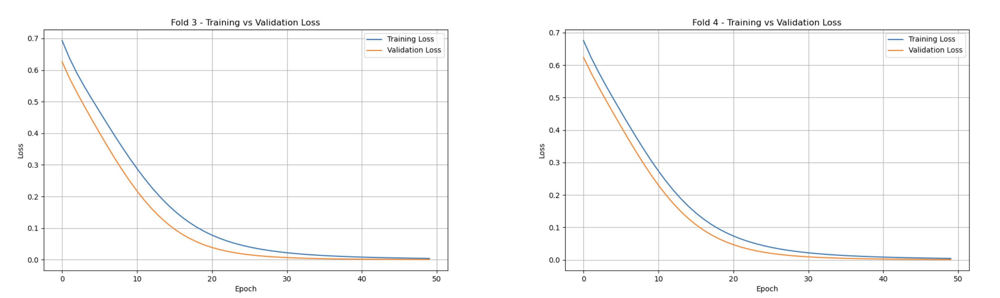
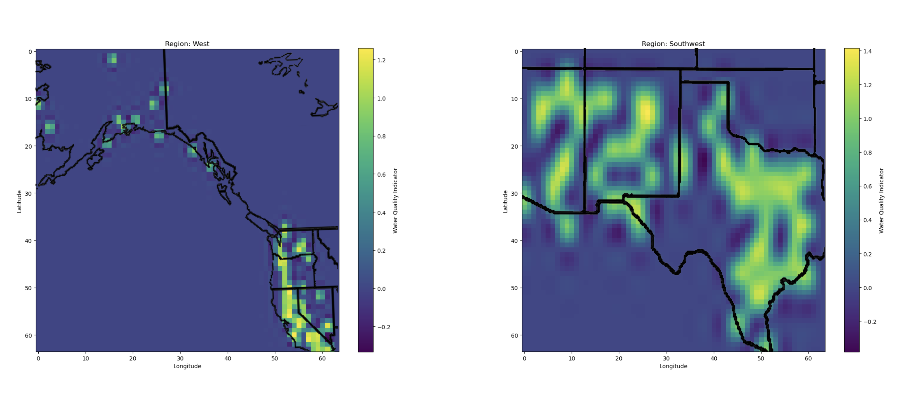

Forecasting Water Contaminants: A Machine Learning Approach for Tribal Safety
Fall 2024 CS 4641 Group 87 Final Report
- (Alistair) Charity Tarver
- Bryant Morales Chora
- Erika Tay
- (Candice) Ying Tzu Chen
Introduction/Background
Safe drinking water is a fundamental right, yet many Native American communities struggle to ensure water quality. Research indicates serious health risks from contaminants, such as lead for instance, which can lead to developmental disorders and increased cancer risks [1]. The "2021 Report to the Congress of the United States on Sanitation Deficiencies for Indian Homes and Communities" reveals many tribal households lack reliable access to clean water, heightening public health concerns [2]. Environmental health initiatives emphasize urgent need for improved water, with continued posed risks [3]. Our data set consists of, the USGS National Water Information System (NWIS), the Water Quality Portal, and many more cross referenced with tribal water dependency locations using the Bureau of Indian Affairs resources to assess geographic areas.
Project Definition
The absence of effective predictive tools for water quality damages the ability of Native American communities and policymakers to respond to contamination events. Traditional monitoring methods often fail to provide timely alerts about rising pollutant levels, resulting in delayed responses, threatening public health, and highlighting the need for technological solutions enhancing water safety.
This proposal aims to develop a machine learning model using neural networks to predict levels of specific water pollutants in sources relied upon by the closest Native American communities to it, as well as looking at if they own/are in charge of this land near this water source. By leveraging historical water data and environmental variables, as well as geographical coordinates, the model seeks to identify trends and potential spikes in contamination. Such capabilities will empower communities to take proactive measures, reducing health risks, and thereby improving the overall well-being of the populations.
In this project, we will be exploring three Machine Learning models -- Decision Tree, Random Forest, and Convolutional Neural Network, and use them to train and analyze water quality data we obtained from the NWQMC.
Data Preprocessing
Data Cleaning and Labeling
The dataset we found is downloaded from the NWQMC[4], which includes the water quality data from various locations in the US with around 12k data points. In the data preprocessing phase, we want to first filter out the unneeded columns and preserve only the following features: state, county, longitude, latitude, result characteristic, result measure, result measure unit. While state, country, longitude, and latitude are pretty straightforward representation of the location where data was collected, the rest represents
- Result characteristic: The type of chemical/pollutant/other factors affecting water quality what the researched measured (e.g. ammonium, acidity, nitrate).
- Result measure: Amount of the characteristic measured.
- Result measure unit: Since some characteristics are measured in different units, we will have to consider that.
Now that unnecessary columns are filtered out, we want to add two more columns -- label and tribal name, where
- Label: Determine if water is ‘safe’ or ‘unsafe’ based on the threshold of each result characteristic.
- Tribal Name: The tribe closest to the water source.
We will need the label column because the decision tree is a supervised learning method and we will need to feed the model the labeled data. Additionally, we want to include the tribe nearest to the water source as that is the main topic of our project.
We encountered an obstacle when trying to determine how we should go about labeling each data as safe or unsafe because there are lots of characteristics measured and it’s a lot of work to find the MCL threshold for each of them and label. Therefore, we looked into our data and decided to just include the 5 characteristics with more data points and better safe/unsafe ratio: ammonium, nitrate, lead, arsenic, and acidity/pH. We want a ‘better safe/unsafe ratio’, because after examining the dataset, we found that there is a lot more safe data than unsafe data. Therefore, we ended up ranking the occurrence of each characteristic from most to least, and chose the 5 characteristics with less skewed safe/unsafe ratio from top to bottom. Now, the ratio is still skewed, and we will be discussing how we try to fix it in the next section. After deciding on the 5 characteristics, we labeled each data according to the MCL threshold of the corresponding characteristic. Now we won’t need the result measure and result measure units anymore, since the units are different and including it in the final dataset may confuse the model.
Labeling the tribal name for each data was also a difficult task. At the beginning, we decided to label them based on state and county. However, given the time constraint, in the end we decided to label them sole based on longitude and latitude. We are able to find a dataset from BIA[5] that includes registered tribes and their locations (latitude/longitude), and proceed to map each tribe to the nearest location in our dataset based on latitude and longitude with geopandas. When we trained our model the first time, the feature gain for tribal names was pretty low because of how many tribes there are. Therefore, we revised the way we assign the tribes by only remaining the top 2 most populated tribes for each state in the location csv and assign those tribes to our water quality dataset based on that. We do realize that this is not especially a great way to represent the corresponding native american tribe, and will be discussing potential revision in our next step section.
Our final dataset consists of the following features: state, county, longitude, latitude, result characteristic, tribe name, and labels. Note that most of them are categorical features, which is suitable for a decision tree model.
One Hot Encoding
One hot encoder was used to transform categorical data into binary data for better performance. Since all of our features are non ordinal data, we used one hot encoding that is specifically suitable for that case. We also considered frequency encoding, which is better for high cardinality features, but the model performed worse when it is used instead of one hot encoding.
SMOTE Oversampling
We have previously discussed the skewed ratio between safe/unsafe points in our dataset. To solve this problem, the SMOTE oversampling technique is implemented. SMOTE works by generating synthetic data points of the minority class, which is ‘unsafe’ in this case.
Decision Tree
Trained with split ratio of 7:3 and default decision threshold 0.5
Hyperparameter Tuning with Cross Validation
Since the model used is Decision Tree, we chose to focus tuning the following hyperparameters
- Max Depth: Maximum depth of the tree
- Min Samples Split: Minimum amount of samples needed to split the tree
- Min Samples Leaf: Minimum amount of samples needed at each leaf
We used grid search so we can try multiple hyperparameter combinations at once. While doing so, we also evaluated the performance for each combination with cross validation to reduce the risk of overfitting and to ensure that we get the best result.
Visualization
Quantitative Metrics
Our final confusion matrix represents the aggregated results of each corresponding quadrant across all 23 outputs. It showcases the model’s overall performance, illustrating the actual versus predicted classifications through a simple heatmap. The true negatives (TN) makeup 74.39% of the data, with 10254 instances where the model correctly predicted the water as safe. On the opposite end, the low true positive (TP) count of 860 represents only 6.24%, suggesting a weakness in accurately predicting when the water is unsafe. This is further proven by our false negative (FN) and false positive (FP) count, where there are 1165 FN cases (8.45%) where the model incorrectly predicted the water as safe, and 1506 FP cases (10.92%) where the model incorrectly predicted the water as unsafe.
Accuracy measures the overall correctness of the model by evaluating how many classifications proved true, represented by the equation: (TP + TN)/(TP + TN + FP + FN). However, this value can be misleading if the classes are not balanced. The dataset we selected had far more cases of safe water compared to unsafe, which would skew the performance. Therefore, we implemented Synthetic Minority Over-sampling Technique (SMOTE) to balance the classification distribution, giving us a final accuracy of 0.8062.
Precision evaluates the TP instances, represented by the equation (TP)/(TP + FP). A high precision value, one that is closer to 1, indicates the model is good at identifying positive cases or where water is unsafe. The model had precision of 0.3635, indicating that our decision tree had many false positives, meaning the model outputs a lot of false alarms or water as incorrectly unsafe.
Recall measures how many positive cases were correctly identified. Recall is equal to (TP)/(TP + FN). A high recall value, one that is much closer to 1 than 0, means that false negatives are minimized. The model had a recall value of 0.4247. This means that the decision tree does predict negatives incorrectly, when they are actually positive, often. For our purpose, this means that the model does predict that water is safe when it is actually unsafe often. The recall value is crucial, as it is important to detect when water is unsafe correctly, therefore a higher recall value is better.
Negative precision is equal to (TN)/(TN + FN), which is how many predicted negatives were actually negative. The negative precision of 0.8980 was much higher than the positive precision.
Negative recall is equal to (TN)/(TN + FP), which is how many actual negatives were correctly identified. The negative recall of 0.8719 was much higher than the positive recall.
Additionally, the F1 score is the harmonic mean of precision and recall.
The model outputted feature importance values. A higher score means that the feature has a greater impact on predictions, while lower scores mean the feature is less relevant. The feature importance values varied due to changes in hyperparameters, feature grouping or reducing, or resampling.
Analyzing Model/Algorithm: What It Means for Our Problem
Based on the quantitative metrics above, the model is more accurate at identifying when water is safe, but struggles to identify unsafe water. It is important to note that accuracy can be misleading with imbalanced datasets like we have here. There is significantly more safe water than unsafe water within our training set. So, the model might predict "safe" water well, but it might fail to recognize "unsafe" water as effectively. This is especially apparent in the shape of our decision tree, with most of the diagram skewed left to favor the safe classifications.
There is also high precision and high recall for safe water, which when applied to our problem, could reduce any false alarms, ensuring that communities aren't unnecessarily alerted to a quality, safety issue when there isn't one.
However, there is low recall and low precision for unsafe water. The high number of FPs and FNs indicate that the model either, potentially, incorrectly classifies safe water as unsafe or classifies unsafe water as safe. If our goal is to minimize false alarms, precision should be the main focus. If our goal is to predict all unsafe water as unsafe regardless of false positives, recall should be the main focus. We can potentially improve this by adding more contextual features, like more geographic or seasonal data, to the model. Not doing so, would lead to undetected public health risks in Native American communities. If both recall and precision should be considered, we should look at the F1 score of the model, to minimize false positives (and false negatives).
Finally, regarding how the dataset relates to the problem we are solving, the average person could look at this and interpret it as showing there isn’t really that dire of a water quality issue. Most of the percentages of pollutants seem to fall under “safe”, right? And, considering this is data collected by the National Water Quality Monitoring Council of the US, the average person would assume it is reliable. However, there are a few factors why this isn’t the case. For one, in researching the safe and unsafe thresholds for each pollutant with the original dataset, there were samples collected in a manner in which the ensuing results were “provisional” rather than “accepted”, meaning there were possibly various factors surrounding its testing. What’s more, is that a “safe” classification from one sample instance doesn’t mean it stays that way, as it takes data spanning years to accurately predict the accumulation of these pollutants, and at what rate. And this is where most health issues reach a critical point, accumulating over years, until it reaches a threshold of severity. Next steps to consider would be including the years present in the dataset in which the samples were taken, to visualize a trend in pollutant accumulation.
Cross validation was used to help ensure the model does not overfit or underfit the training data. This helped the test data performance and increased generalizability.
The model addresses the class imbalance, as one class ("safe" water) is significantly more prevalent than the other ("unsafe" water) in the dataset. Now, given this is historical water quality data, it is very representative of what real world data is, nonuniform and skewed. More “safe water” classes skew the data for potential false positives.
We further address this using SMOTE in particular, as discussed before, attempting to oversample the minority class of “unsafe” water by generating synthetic samples based on what we already have.
Random Forest
When training the Random Forest model, a data split of 7:3 was used. 70% of the data was used for training and 30% was used for testing.
Hyperparameter Tuning
Since the Random Forest Model is used, the following hyperparameters were chosen for tuning:
- N estimators: number of trees
- Max Depth: maximum depth of the tree
- Min Samples Split: minimum amount of samples needed to split the tree
- Min Samples Leaf: minimum amount of samples needed at each leaf
- Max Features: number of features to consider at each split
- Class Weight: handles class imbalance
Similarly to the Decision Tree Model, grid search was used to try multiple hyperparameter combinations at once. This allowed the evaluation of the performance of each combination with cross validation to reduce the risk of overfitting and to ensure the best values for the hyperparameters are used.
Visualization
The above image shows a random forest with 4 trees and a maximum depth of 5. This random forest does not have the best accuracy, but the image was generated to depict that a random forest has multiple trees.
Quantitative Metrics
Accuracy, precision, recall, negative precision, negative recall, and the F1 score are defined and explained in the Decision Tree Model Quantitative Metrics section.
The Random Forest model had an accuracy of 0.8716. This indicates that many classifications proved true.
The model had a precision of 0.63, indicating that the random forest had a bit more true positives than false positives, meaning the model outputs some false alarms, predicting water as incorrectly unsafe.
The model had a recall value of 0.31. This means that the random forest does predict negatives incorrectly, when they are actually positive, often. The model does predict that water is safe when it is actually unsafe often.
The negative precision of 0.89 was much higher than the positive precision.
The negative recall of 0.97 was much higher than the positive recall.
The model outputted feature importance values. A higher score means that the feature has a greater impact on predictions, while lower scores mean the feature is less relevant. The feature importance values varied due to changes in hyperparameters. The two features with the highest feature importance values were location latitude and location longitude.
Analysis
Based on the quantitative metrics above, the model is more accurate at identifying when water is safe, but struggles to identify unsafe water. This accuracy could be misleading due to the imbalanced dataset. There is significantly more safe water than unsafe water within our training set. So, the model might predict "safe" water well, but it might fail to recognize "unsafe" water as effectively. This is apparent in the shapes of the trees in the random forest, with most of the trees skewed left.
There is also high precision and high recall for safe water, which when applied to our problem, could reduce any false alarms, ensuring that communities aren't unnecessarily alerted to a quality, safety issue when there isn't one.
However, there is lower recall and lower precision for unsafe water. There are slightly more TPs than FPs and many FNs, which indicates that the model is more likely to classify that unsafe water is unsafe than safe water as unsafe and more likely to incorrectly classify unsafe water as safe. If our goal is to minimize false alarms, precision should be the main focus. If our goal is to predict all unsafe water as unsafe regardless of false positives, recall should be the main focus. If both recall and precision should be considered, we should look at the F1 score of the model, to minimize false positives and false negatives.
Cross validation was used to ensure the model does not overfit or underfit the training data. This helped the test data performance and increased generalizability.
Since there was an obvious class imbalance, one class ("safe" water) is significantly more prevalent than the other ("unsafe" water) in the dataset, the model addresses this using SMOTE. SMOTE works because it oversamples the minority class of “unsafe” water by generating synthetic samples based on the existing dataset.
Convolutional Neural Network
Preprocessing
The model categorized data points into U.S regions based on the states where the samples were recorded, mapping them onto a generated grid. These individual grids were combined into a comprehensive single-channel grid representation to be used as the training set. However, extracting external data per coordinate pair proved difficult to implement given API usage-restraints and complexity. As a result, latitude and longitude coordinates were the only geographical input features.
Architecture & Training
- Convolutional Layers
- 1st Layer: 1 Input Channel → 32 Filters (ReLU) + Pooling
- 2nd Layer: 32 Input Channels → 64 Filters (ReLU) + Pooling
- Fully Connected Layers
- 1st Layer: 64 * 8 * 8 Neurons → 128 Neurons (ReLU)
- 2nd Layer: 128 Neurons → 1 Neuron (Sigmoid)
A 5-Fold Cross-Validation strategy was used to generate training & validation sets to prevent overfitting and assess the influence of geographical data from varying regions on water quality predictions. The model was trained for 50 epochs with a learning rate of 0.0001, optimized with a Binary Cross Entropy to penalize incorrect classifications. Validation and training loss rates were traced at every two epochs for monitoring performance as the model learns.
Training vs. Validation Loss


Unsafe Water Data Points Heatmap

Quantitative Metrics
The Training vs Validation Loss graphs showcase the model’s learning progression across each k-th fold. In every fold, the training loss steadily decreases, stabilizing near zero. Correspondingly, the validation loss follows a similar trend, converging towards zero. One key detail is observed within the fifth fold, where the validation loss is slightly higher than the training set, with a larger gap compared to previous folds. This outlier could suggest an under-representative training set for fold five. Nonetheless, both metrics eventually stabilize like the other folds.
On average, the validation loss was measured at 0.1273, with the training loss averaged at 0.1437. The overall accuracy was found at 0.9960.
To further illustrate the locality of unsafe water sources, heatmaps were generated. Each region’s map highlights hotspots indicating where the model labeled water sources as unsafe (values close to 1).
Analysis
The statistics above highlight a critical issue within the CNN model. While the model successfully captures a spatial relationship using geographical coordinates, the training and validation losses strongly suggest overfitting. Although both metrics stabilize rapidly within an acceptable margin of each other, the convergence near perfect zero signifies the model almost perfectly matches its training set. This is further proven by the unrealistically high accuracy rate.
Multiple techniques were initially implemented to mitigate overfitting, such as cross validation and regional categorization for a varied training set. However, the adverse nature of the initial dataset and the lack of diverse features limit the model’s generalization ability. As it stands, it can only really be used as a lookup mechanism, which would struggle against new unseen coordinates.
Aside from introducing water-specific data such as pollutant indices or weather patterns, one possible solution to our problem could be the implementation of Data Augmentation. This strategy would perform transformations on our current dataset, introducing variability. Alternatively, considering CNNs are best for image data, a more general or mixed Neural Network model would have yielded better results. These modifications would assist the model in shifting from memorization toward meaningful inference.
Model Comparison
Comparison Table for Three Models
| Model | Accuracy | Precision (Safe) | Recall (Safe) | F1-Score (Safe) | Precision (Unsafe) | Recall (Unsafe) | F1-Score (Unsafe) | Complexity | Interpretability |
|---|---|---|---|---|---|---|---|---|---|
| Decision Tree | 0.8749 | 0.89 | 0.97 | 0.93 | 0.65 | 0.33 | 0.43 | Low | High |
| Random Forest | 0.8716 | 0.89 | 0.97 | 0.93 | 0.63 | 0.31 | 0.42 | Medium | Medium |
| CNN | 0.9960 | - | - | - | - | - | - | High | Low |
Note that CNN has average training loss of 0.1437 and average validation loss of 0.1273
Decision Tree
Decision trees have great interpretability and are easy to visualize to show the process of decision-making. There are not many parameters to tune, and they usually only take under a minute to train. Another advantage is that it is convenient to extract feature importance from decision tree training. However, since the decision tree is a relatively simple model, it has a few downsides. While handling imbalance, it uses balanced class weights, but the precision and recall rate on the minority class (Unsafe) still seems to be low, even with using SMOTE as a preprocessing method. When testing with different hyperparameters, we found that tuning parameters such as max depth can easily lead to overfitting, so it is crucial to choose the right values for the decision tree.
Random Forest
Random Forest uses an ensemble method to average multiple decision trees. Therefore, while it is less interpretable than a single tree, it is still easier to visualize and interpret than a CNN. It is more complex than a single decision tree and averages out the result, so it is less prone to overfitting and generalizes better. However, in our results, it seems that the Random Forest does not help much with handling imbalanced classes. It seems to have similar or slightly worse performance than the decision tree. It is possible that a Random Forest will work better than a decision tree when all hyperparameters are optimized or when our dataset is not as imbalanced. Both Random Forest and decision trees work well with categorical and continuous variables, but Random Forest usually works better in countering overfitting and capturing complex patterns than decision trees due to the ensemble method.
CNN
CNNs are usually black boxes with multiple layers, therefore it is difficult to interpret and trace the decisions during model training. Compared to decision trees and Random Forest, they require more computing resources, time, and quality data for training. However, they are great at identifying potential spatial patterns in our dataset and seem to work better at preventing overfitting. Since part of our goal is to find spatial patterns between water quality and locations (tribal nations), CNN can be very useful if there is a pattern. CNN can also learn more complex and nonlinear relationships than the other two models. Throughout the epochs of training, there is a decrease in validation loss, suggesting that it's doing a good job with generalization. Adding on, we got a very high accuracy of 99.6%, suggesting that the model is doing really well on our dataset. However, there is still a potential of overfitting and imbalance of data because we only have 3000 data points, which might be too small for effective CNN training.
Next Steps
Given the time constraint, there were some aspects we could not carry out while testing our models. In the future, we would like to explore further following approaches
- Experiment more combinations of hyperparameters for Decision Tree and Random Forest
- Explore more effective and accurate data preprocessing methods
- Find larger dataset that is more balanced
- Incorporate weather data into CNN for identifying spatial pattern between water quality and location
- Potentially try more models such as FNN and RNN
Gantt Chart and Contribution Table
References
- M. Hanna-Attisha et al., "Elevated Blood Lead Levels in Children Associated with the Flint Drinking Water Crisis: A Spatial Analysis of the Flint Water Study," American Journal of Public Health, vol. 106, no. 2, pp. 283-290, 2016. [Online]. Available: https://ajph.aphapublications.org/doi/10.2105/AJPH.2015.303003
- U.S. Indian Health Service, "2021 Report to the Congress of the United States on Sanitation Deficiencies for Indian Homes and Communities," 2021. [Online]. Available: https://www.ihs.gov/sites/newsroom/themes/responsive2017/display_objects/documents/2021RTCSanitationDeficienciesReport.pdf
- Centers for Disease Control and Prevention, "Office of Tribal Affairs Addresses Environmental Health in Native American Communities," 2013. [Online]. Available: https://blogs.cdc.gov/yourhealthyourenvironment/2013/11/22/office-of-tribal-affairs-addresses-environmental-health-in-native-american-communities/
- NATIONAL WATER QUALITY MONITORING COUNCIL, Water quality data home. Retrieved November 9, 2024, from https://www.waterqualitydata.us/beta/
- Bureau of Indian Affairs, Tribal leaders directory. Retrieved November 9, 2024, from https://www.bia.gov/service/tribal-leaders-directory
- Passing categorical data to sklearn decision tree. (2024, March 4). GeeksforGeeks. https://www.geeksforgeeks.org/passing-categorical-data-to-sklearn-decision-tree/
- “How to Tune a Decision Tree in Hyperparameter Tuning.” GeeksforGeeks, 16 Apr. 2024. https://www.geeksforgeeks.org/how-to-tune-a-decision-tree-in-hyperparameter-tuning/
- Global Water Quality Database, "Global Water Quality Data." [Online]. Available: https://data.worldbank.org/dataset/global-water-quality
- National Water Quality Monitoring Council, "National Water Quality Monitoring Council Data." [Online]. Available: https://acwi.gov/monitoring/
- U.S. Department of Agriculture, "Census of Agriculture," USDA. [Online]. Available: https://www.nass.usda.gov/
- U.S. Environmental Protection Agency, "Water Quality Assessments," EPA. [Online]. Available: https://www.epa.gov/waterdata/water-quality-assessments
- U.S. Geological Survey, "National Water Information System," USGS. [Online]. Available: https://nwis.waterdata.usgs.gov/nwis/
- "Indigenous Peoples Face Growing Challenges to Access Safe Water." United Nation, 14 Oct. 2022. [Online]. Available: https://www.ohchr.org/en/stories/2022/10/indigenous-peoples-face-growing-challenges-access-safe-water
- "Difference Between Random Forest and Decision Tree." GeeksforGeeks, 23 Feb. 2024. [Online]. Available: https://www.geeksforgeeks.org/difference-between-random-forest-and-decision-tree/
- "Introduction to Convolution Neural Network." GeeksforGeeks, 21 Aug. 2017. [Online]. Available: https://www.geeksforgeeks.org/introduction-convolution-neural-network/